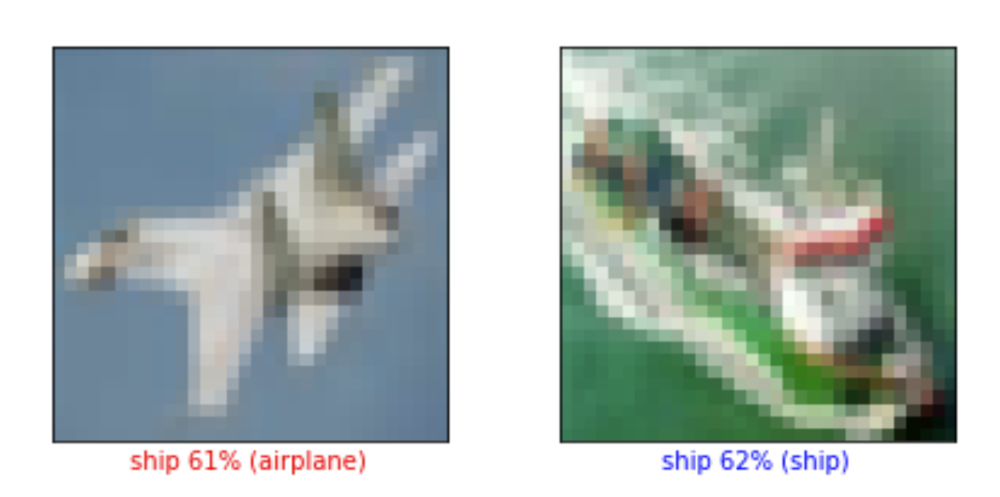

Lab4: Starting with Neural Networks
In this lab you will make your first Neural Networks for some classification or regression tasks.
Image Classification
In the set of this exercises we will be using tf.keras (a high-level API to build and train models in TensorFlow) and GoogleColab.
1. Open a new notebook in GoogleColab for python3. Run the following code for activating tensorflow version 2.0:
try:
# %tensorflow_version only exists in Colab.
%tensorflow_version 2.x
except Exception:
pass2. Import tensorflow, keras, numpy and matplot using the following code:
from __future__ import absolute_import , division , print_function , unicode_literals
# TensorFlow and tf.keras
import tensorflow as tf
from tensorflow import keras
# Helper libraries
import numpy as np
import matplotlib.pyplot as plt3. Check your tensorflow version using:
print(tf.__version__)The output should be 2. or higher.
4. Import the cifra10 data set. The CIFAR-10 dataset consists of 60000 32 × 32 colour images in 10 classes, with 6000 images per class. There are 50000 training images and 10000 test images: cifar10
data = keras.datasets.cifar10
cifar10_data = data.load_data()5. Before using a dataset, the datatype should be checked. Test type(cifar10 data) for verifying the variable type. len(cifar10 data) is another command for checking the data size.
6. Load train and test images and labels with:
(train_images , train_labels),(test_images , test_labels) =
cifar10_dataLoading the dataset returns four NumPy arrays:
The
train_imagesandtrain_labelsarrays are the training set, the data the model uses to learn.The model is tested against the test set, the
test_images, andtest_labelsarrays.
7. The images are 32 × 32 NumPy arrays, with pixel values ranging from 0 to 255. You can check an example with:
print(train_images[0])
print(train_images[0].shape)The labels are an array of integers, ranging from 0 to 9. Check it with your own code. Each image is mapped to a single label. Since the class names are not included with the dataset, store them here to use later when plotting the images: (check the dataset link for more detailed information: cifar)
class_names = [ 'airplane' , 'automobile' , 'bird' , 'cat' , 'deer' , 'dog' , 'frog' , 'horse' , 'ship' , 'truck']8. Before training the model, explore the datasets. Number of train and test points, their array size and etc.
9. An interesting fact about the image is that you can plot the image. It is possible using the following:
index = 8
plt.figure()
plt.imshow(train_images[index])
plt.colorbar()
plt.grid(False)
plt.show()
train_labels[index]10. To verify that the data is in the correct format and that you’re ready to build and train the network, let’s display the first 25 images from the training set and display the class name below each image. To do so use the following commands:
plt.subplot()
plt.xticks([])
plt.yticks([])
plt.imshow()
plt.xlabel()11. You can check various images by changing the index value, or by calling test_images. You can see that the pixel values fall in the range of 0 to 255. normalise train and test sets using the following code:
train_images = train_images / 255.0Building a neural network in general requires configuring the layers of the model, then compiling the model. The basic building block of a neural network is the layer. Layers extract representations from the data fed into them. Hopefully, these representations are meaningful for the problem at hand. Most of deep learning consists of chaining together simple layers. Most layers, such as tf.keras.layers.Dense, have parameters that are learned during training.
12. First neural network definition with three layers and two activation functions
model = keras.Sequential([
keras.layers.Flatten(input_shape=(32, 32, 3)),
keras.layers.Dense(128, activation=’relu’),
keras.layers.Dense(10, activation=’softmax’)])The first layer in this network, tf.keras.layers.Flatten, transforms the format of the images from a two-dimensional array (of 32 by 32 pixels) to a one- dimensional array (of 32 × 32 = 1024 pixels). Think of this layer as unstacking rows of pixels in the image and lining them up. This layer has no parameters to learn; it only reformats the data.
After the pixels are flattened, the network consists of a sequence of two tf.keras.layers.Dense layers. These are densely connected, or fully con- nected, neural layers. The first Dense layer has 128 nodes (or neurons). The second (and last) layer is a 10-node softmax layer that returns an array of 10 probability scores that sum to 1. Each node contains a score that indicates the probability that the current image belongs to one of the 10 classes. In this exercise, we don’t explain the reasons of defining a neural network with this structure. For defining a network compatible with our data, we should define an input layer with the same size as the input data (images size) and an output corresponding the out put data (image labels).
13. Before the model is ready for training, it needs a few more settings. These are added during the model’s compile step:
Loss function: This measures how accurate the model is during training. You want to minimize this function to ”steer” the model in the right direction.
Optimizer: This is how the model is updated based on the data it sees and its loss function.
Metrics: Used to monitor the training and testing steps. The following example uses accuracy, the fraction of the images that are correctly classified.
14. Training the neural network model requires the following steps:
Feed the training data to the model. In this example, the training data is in the train images and train labels arrays.
The model learns to associate images and labels.
You ask the model to make predictions about a test set, in this example, the test images array. Verify that the predictions match the labels from the test labels array.
model.compile(optimizer='adam',
loss='sparse_categorical_crossentropy',
metrics=['accuracy'])To start training, call the model.fit method, so called because it “fits” the model to the training data:
model.fit(train_images , train_labels , epochs=10)15. It is the moment for checking the model performance on the test dataset.
test_loss , test_acc = model.evaluate(test_images , test_labels ,
verbose =2)Check the test loss and accuracy in your code.
16. With the model trained, we can use it to make predictions about some images.
predictions = model.predict(test_images)The model predicts a label for each image in the testing set. Print the first, second and third element of the predicted test sets. You can see that each element contains 10 values indicating a probability of each label. Choose the maximum one using np.argmax() function. Compare the predicted label of the first three elements with their predicted labels. How many are correct?
17. Write a function for checking the predicted labels. The result should be similar to the Figure below with a label indicating the probability of the predicted label with blue color if the prediction is correct otherwise in the red color?

18. Grab a single element from the test set such as test_images[5]. Send it to the model.predict() and check what will happen. Why? Correct it by your modification. (hint: you can use expand_dims())
19. Respecting input and output sizes, try to change your model structure in exercises 12 and 13 and observe their affections on prediction precision.
You can choose another image classification dataset from Tensorflow available datasets https://www.tensorflow.org/datasets/catalog/overview and predict a classification function for it.
Sentiment Analysis
In this exercise, you’ll build a neural network using Keras to classify texts into ones with positive and negative sentiments; sentiment analysis.
Import the necessary Libraries
import numpy as np
from tensorflow.keras.utils import to_categorical
from tensorflow.keras import models
from tensorflow.keras import layers
from tensorflow.keras.datasets import imdb1. Load the IMDB dataset
(training_data, training_targets), (testing_data, testing_targets) = imdb.load_data(num_words=10000)
data = np.concatenate((training_data, testing_data), axis=0)
targets = np.concatenate((training_targets, testing_targets), axis=0)2. Take only the first 10000 words from each data sample. This reduces the size of our final model during training.
3. Build your Neural Network model
4. Compile your model
5. Fit your model, and get its final accuracy
Regression
In this exercise, you will create a regressor on the Boston housing Dataset, a task that you’ve previously accomplished using linear regression and decision trees. only this time, you’ll accomplish it using Keras neural networks.
Import the Boston Housing dataset
from sklearn.datasets import load_boston
import pandas as pd
boston_dataset = load_boston()
df = pd.DataFrame(boston_dataset.data, columns=boston_dataset.feature_names)
df['MEDV'] = boston_dataset.target1. Visualize each feature and label in your data using a scatterplot. This will help in finding which features, if any, contain outliers. It will also assist in finding potential strong correlations between features.
2. Split your data into training and testing
3. Normalize your training and testing subsets
4. Build your keras neural network model. Create a Sequential model, and make it only with 3 layers: an input (Dense) layer with 128 neurons, a hidden (Dense) layer with 64 neurons, both using a ReLU (Rectified Linear Unit) activation function, and a dense layer with a linear activation will be used as output layer.
from keras.models import Sequential
from keras.layers import Dense
#model =5. Compile your model and view its summary.
To compile your model, use the adam opimizer, and the mse (mean-squared-error) loss function, and the mae (mean average error) metric to report its performance.
model.compile(optimizer='adam', loss='mse', metrics=['mae'])
model.summary()6. Train your model
7. Evaluate your model using model.evaluate
mse_nn, mae_nn = model.evaluate(X_test, y_test)
print('Mean squared error on test data: ', mse_nn)
print('Mean absolute error on test data: ', mae_nn)8. Compare your model’s performance vs that of an sklearn Linear Regression model